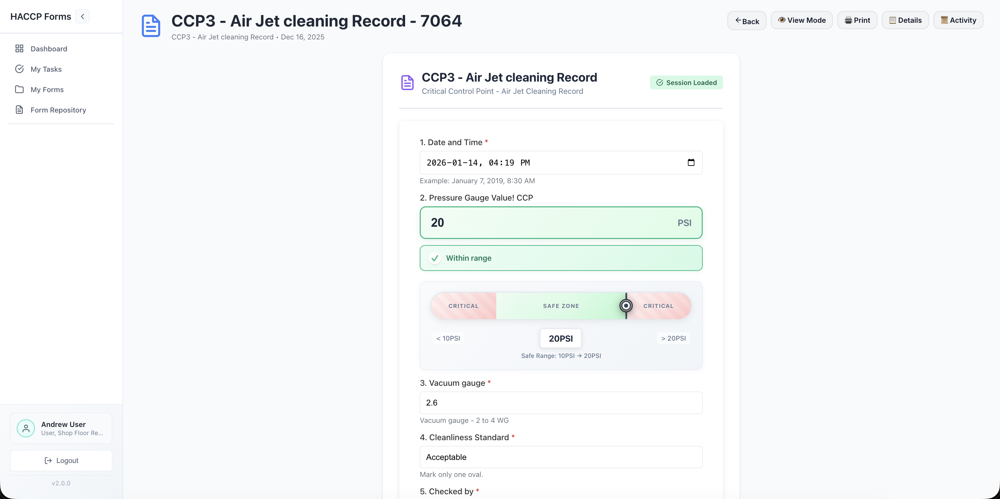
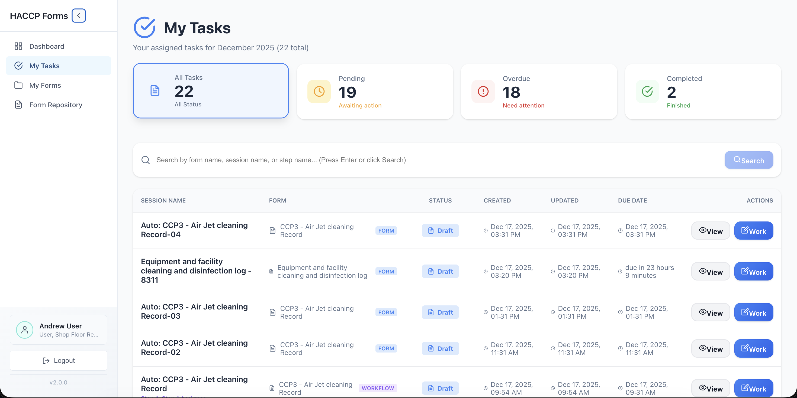

03 / Unique Value


The Five Australian Dairy Advantages
01 / Regulatory Compliance
Keep HACCP Evidence Ready for Australian Dairy Requirements.
Support HACCP-based food safety programs required across Australian dairy primary production, transport, and processing
Capture CCP checks, prerequisite controls, corrective actions, verification records, and sign-offs in one place
Standardise evidence across plants, shifts, product categories, and state-based regulator expectations
Reduce gaps caused by paper logs, spreadsheet drift, and retrospective record completion
Compliance becomes live operational evidence, not end-of-month paperwork
All product images are for illustrative purposes only. Brands shown belong to their respective owners and do not imply partnership or endorsement.
02 / Anytime Audit Ready
Regulator, Customer, and Certification Audits Without the Scramble.
Generate audit evidence packs for CCP records, deviations, corrective actions, and completed checks
Show timestamped accountability for who completed, reviewed, escalated, and closed each item
Track recurring non-conformances and prove corrective action closure with supporting evidence
Keep audit readiness continuous instead of treating it as a separate project
Walk into audits with records already organised and defensible

03 / Penalty Risk Reduction
Reduce Exposure from Missed Checks, Late Actions, and Weak Records.
Escalate overdue checks and unresolved deviations before they become audit findings
Maintain complete corrective action history for enforcement reviews and customer investigations
Reduce the operational blind spots that can lead to disposal, recall, licence, or reputation pressure
Give management a live view of compliance risk by site, area, line, or task type
Lower the chance of costly non-compliance surprises

04 / Real-Time Breach Alerts
Know the Moment a Dairy Safety Limit Moves Out of Range.
Connect temperature, humidity, pressure, and process sensors with configurable monitoring intervals
Trigger alerts when critical limits are breached across storage, pasteurisation support checks, dispatch, or cold rooms
Auto-create corrective actions and route them to the right role, shift, or escalation owner
Use trend graphs to see exactly when drift started, how long it lasted, and what action was taken
From breach to response path in real time
All product images are for illustrative purposes only. Brands shown belong to their respective owners and do not imply partnership or endorsement.
05 / Cost Saving
Cut Manual Compliance Effort Without Cutting Control.
Reduce paper handling, duplicate data entry, spreadsheet reconciliation, and manual report preparation
Focus QA time on prevention, verification, and improvement instead of chasing missing records
Spot recurring equipment, process, or shift issues that create avoidable waste and rework
Scale consistent dairy compliance across additional lines or facilities without proportional admin overhead
Better control, lower admin load, fewer preventable losses